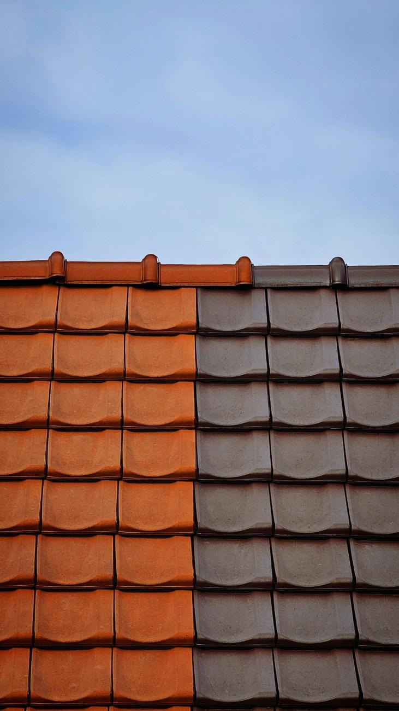

Votre expert en couverture, maçonnerie, peinture et isolation en Essonne
Basé en Essonne, CMP Rénovation est votre partenaire de confiance pour tous vos travaux de couverture, maçonnerie, peinture et isolation dans le 91. Nous intervenons à Athis-Mons, Viry-Châtillon, Juvisy-sur-Orge, Savigny-sur-Orge, Massy et partout dans le département.
Avec plus de 10 ans d’expérience, notre équipe d’artisans qualifiés utilise des matériaux de qualité et des techniques modernes pour garantir des chantiers propres, durables et conformes aux normes. Passionnés par notre métier, nous mettons tout en œuvre pour satisfaire particuliers et professionnels.
 Demander un devis gratuit📞 07 45 46 96 80 | 06 61 89 64 02
Horaires :
Lundi au samedi : 8h00 – 18h00
Pour tous vos projets en Essonne, contactez-nous dès maintenant !